C++ Notes 2022 / 09 / 03
歡迎來到 C++ 的世界，這裡是我的學習筆記。
[Day1] Welcome to C++
影片

何謂程式語言 ?
對我來說程式語言跟平常使用的自然語言大同小異。
人類學習自然語言的目地不外乎是與他人溝通，程式語言則是與電腦溝通。然而電腦只認得 0 跟 1，中間必須要經過一些轉換才能把我們的話翻譯給電腦，這部分之後會談到。
綜合上述，程式語言可以說是一種用來解決問題的工具。
C++ 特性
C++ 屬於靜態型別、強型別程式語言。當我們宣告一個變數並賦予其型別時，可以看出靜態型別的特性，反之 Python 這種動態型別程式語言就不需要明確地宣告型別，中途也可以隨意改動。強型別其實是一種觀念，是指盡量使用具有型別的方式開發。
以上兩個特性主要在提升發現錯誤的機會。當型別錯誤時，編譯器 (Compiler) 不會讓程式通過編譯。雖然有點囉嗦，但是卻可以避免掉一些難以發現的 bug，尤其在大程式裡更能凸顯它的優點。相對於 Python，C 跟 C++ 都是屬於較低階的語言，它們可以直接對記憶體進行存取，所以效率很高，適合寫靠近硬體的軟體。
C++ 從 C 衍生出來，所以 C++ 有一個特性是 C 沒有的，那就是 OOP (Object Oriented Programming)。簡單來說，差異在於 C++ 的 class 比 struct 多出了一些功能，這部分之後會談到。
/* C++ 靜態型別 */
int i = 10;
/* Python 動態型別 */
i = 10;
i = "10";
/* C++ 強型別 */
int i = 1 + "abc"; // 編譯失敗[Day2] How to Setup C++ on Windows
影片

何謂 IDE、編輯器 ?
IDE 的全名為整合開發環境 (Integrated Development Environment)，顧名思義就是將開發過程需要用到的工具都打包在一起。相反地，編輯器則是需要另外安裝插件或下載外掛。
常見 IDE
- Visual Studio
- Code::Blocks
- PyCharm
- Android Studio
- Xcode
常見編輯器
- Visual Studio Code
- Sublime text
- Notepad++
- Vim
- Microsoft Word (沒有開玩笑)
為何選用 IDE ?
- 節省了從無到有建立開發環境的成本
- 一般具有編譯器、偵錯程式和圖形使用者介面等工具
- 專案結構管理
為何選用編輯器 ?
- 客製化
- 開啟、編輯檔案快速
- 瞭解底層運作過程
正文
我們選用 Visual Studio 這款 IDE，因為之後希望寫一個小遊戲來熟悉語法。進入官網，下載 Visual Studio Community。
載完後會看到以下介面，勾選 使用 C++ 的桌面開發 (Desktop Development with C++)。如果想要使用英文版或是其他語言的介面，點選語言套件 (Language packs) 並勾選，推薦使用英文介面，因為中文版有些翻譯沒有很好。確認沒問題後就可以按右下角下載，下載需要一些時間可以去上個廁所。
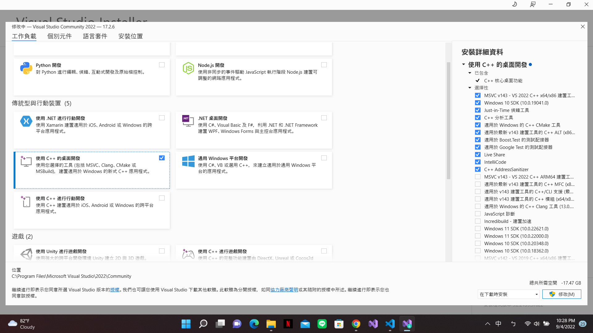進入 Visual Studio 按照以下步驟創建 New project。語言的部分可以在搜尋欄 (Search) 打上語言，應該就能找到在哪裡改了。
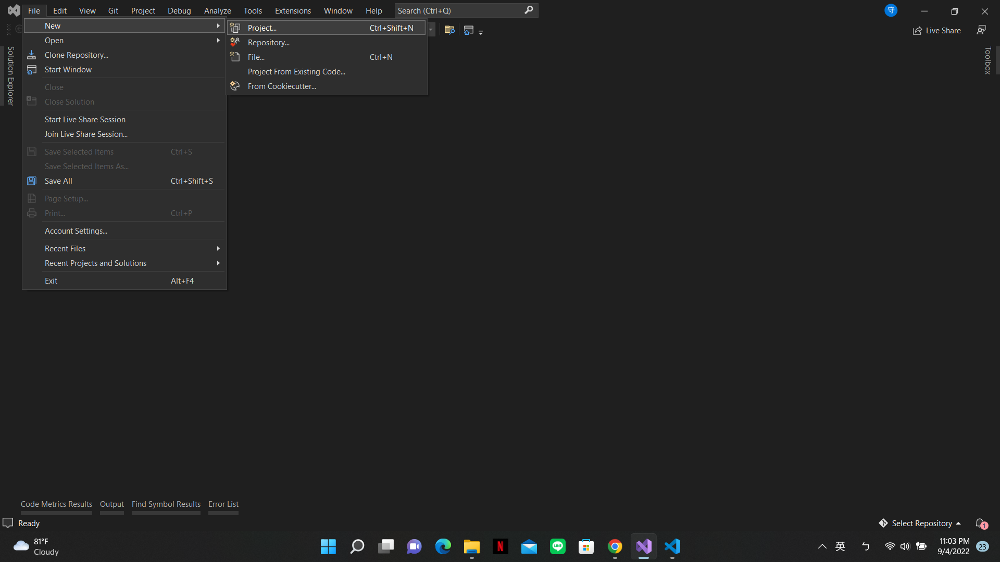選取 Project template，在這裡我們選擇 Empty Project。
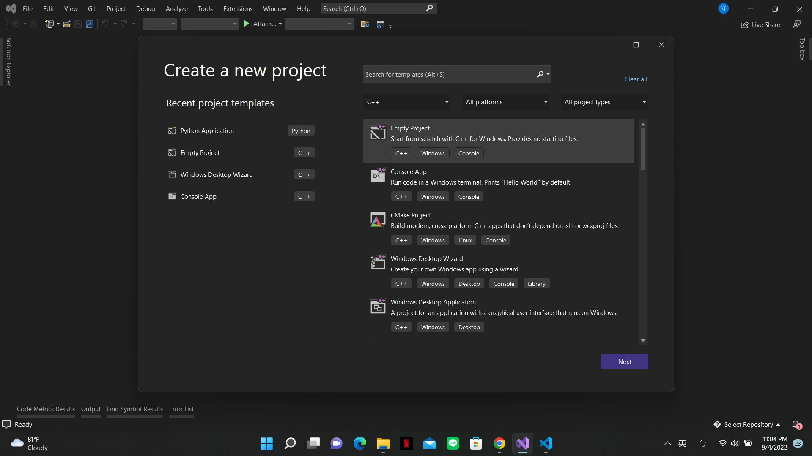Visual Studio 有 Solution 跟 Project。Solution 裡面有一或多個 Project，有點像工作台。Project 則存放你的 source code、library、image 等等。
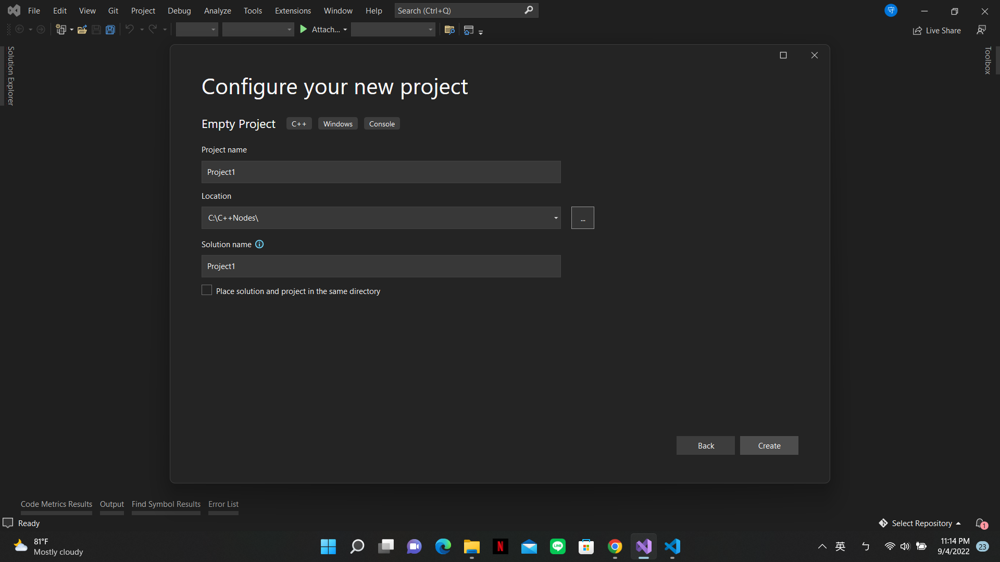新增一個 .cpp file
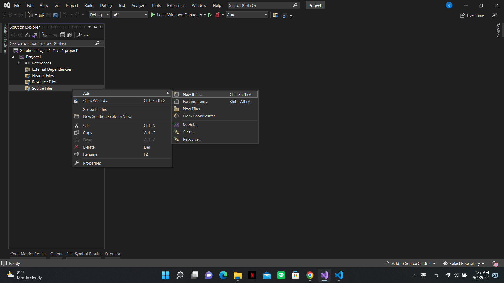 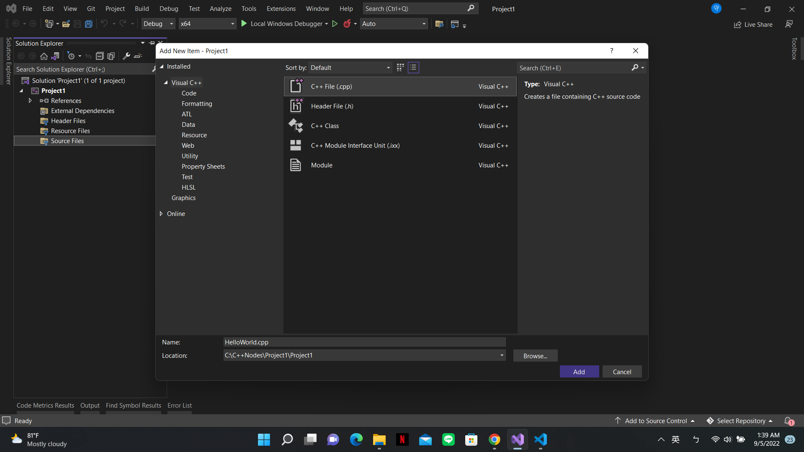打上以下程式範例，並按 Local Windows Debugger 來 debugging。
#include <iostream>
int main()
{
std::cout << "Hello World!" << std::endl;
}編譯成功畫面
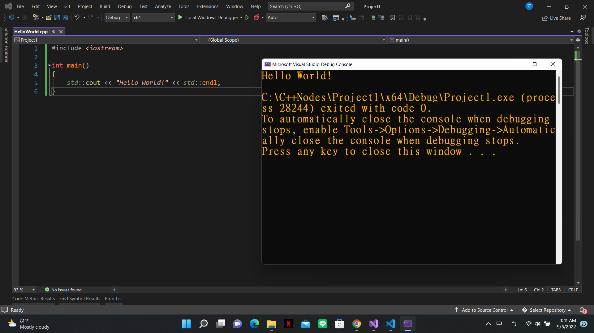
[Day3] How to run C++ in Command Line on Windows
何謂 Command Line ?
Command Line 是一個能夠輸入指令跟系統直接對話的地方。Windows 的 Command Line 是 Command Prompt (CMD)，在搜尋框輸入 cmd 即可開啟。
何謂 GCC ?
GCC 是一個編譯器，負責把高階語言轉成組合語言或機器碼讓電腦讀懂，有點像翻譯員。更詳細的內容下一章會作解釋，現在只要知道他們能夠把程式語言轉成電腦讀得懂的語言。
若要使用 GCC 編譯器，就必須執行 gcc 或 g++ 指令。以前的 GCC 只能編譯 C 語言，現在多了非常多語言，例如 Go、C++、Objective-C、Objective-C++、Fortran、Ada、D 等等。
那為什麼 gcc 能夠編譯 C++ 還需要 g++ 指令呢 ? 事實上，使用 g++ 時，程式會自動呼叫 gcc 來進行編譯，g++ 主要負責鏈結 C++ 的庫，gcc 不會自動鏈結，需要下達額外指令。
等等會用到的指令
開啟檔案目錄
cd 檔案路徑
顯示目前路徑下的檔案
dir
目前路徑下新增檔案目錄
mkdir 檔案目錄名
目前路徑下新增檔案
type nul > 檔名.副檔名
g++ 指令
產生 *.exe (可執行檔)
g++ 檔名.cpp -o 檔名
產生 *.s (Assembly)
g++ -S 檔名.副檔名
gcc 指令
產生 *.exe (可執行檔)
gcc 檔名.副檔名 -o 檔名 -lstdc++
// 鏈結 C++ 標準庫 STL
步驟
MinGW 包含 gcc/g++ 和一系列工具，是 windows 下的 GNU 環境。
按照自己的需求下載 x64 或 x86
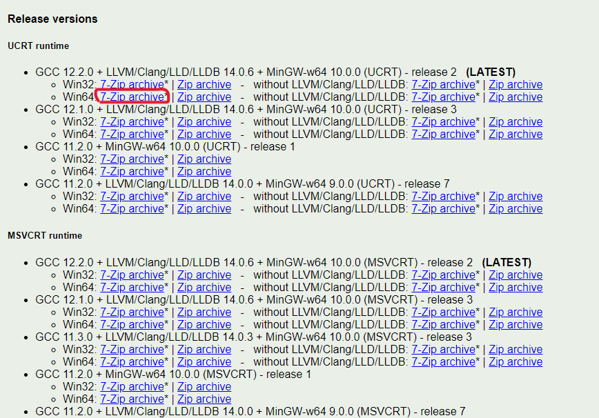
在 C 槽創建一個資料夾叫 mingw64 或 mingw32，接著解壓縮剛剛的 zip 到此資料夾。
再來要設置環境變量，它是計算機自動創建和維護的變量，幫助系統定位和安裝應用程序、檢查系統首選項和執行命令，可以從設備上的任何位置訪問它。
有兩種類型的變量：系統變量和用戶變量。 前者是系統上每個用戶都可以訪問的全局變量。 相反，用戶變量只能由當前登錄到計算機的人訪問。 這可以防止系統自動為每個人創建和維護相同的環境變量。
在搜尋框打上 Edit the system environment variables。看到以下畫面後，點擊右下的 Environment Variables
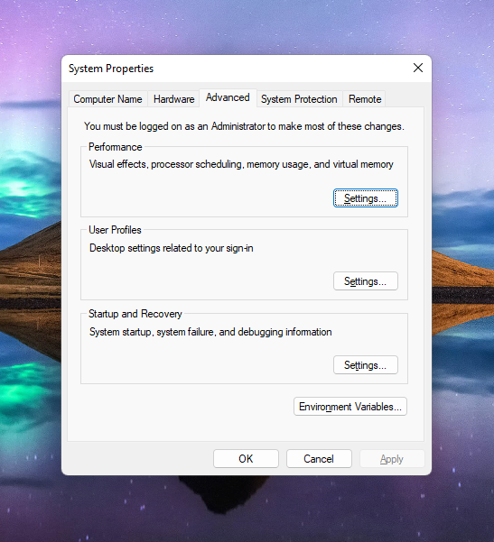
點擊系統變量或用戶變量的 Path 然後 Edit，新增 binary 的路徑。
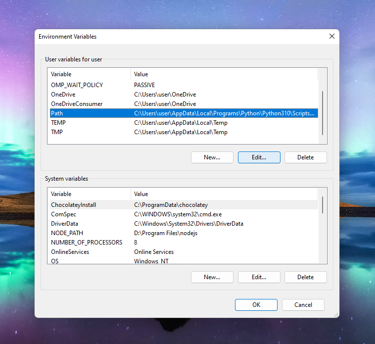
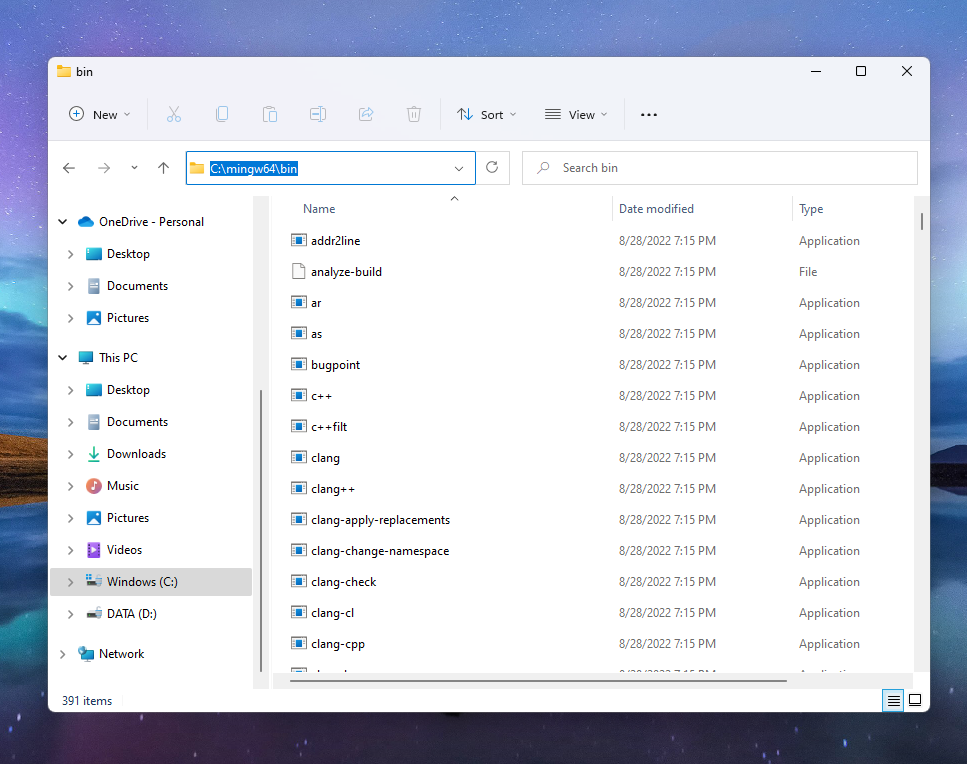
在搜尋框打上 cmd 開啟 Command Prompt。輸入指令開啟檔案目錄，創建一個 .cpp file
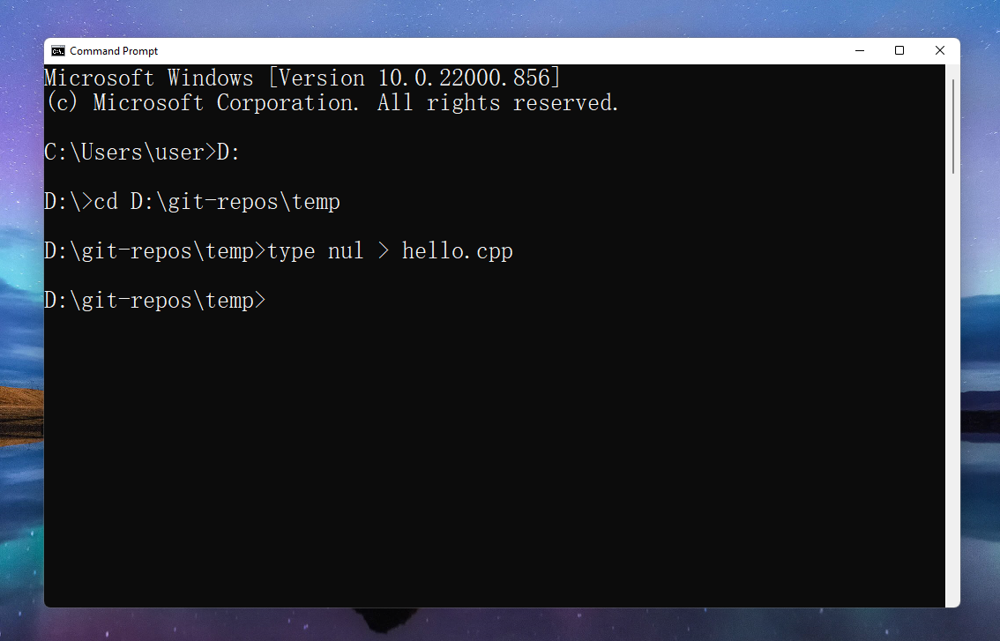
用文字編輯器開啟 .cpp file，在這裡我用記事本，接著打上以下程式碼。
#include <iostream>
int main() {
std::cout << "Hello World!";
}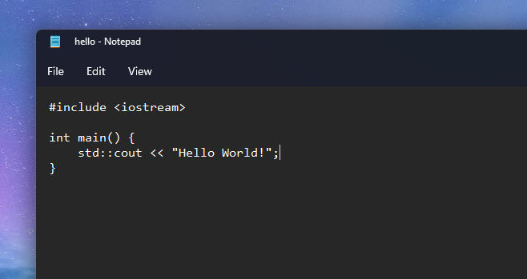
打上指令產生執行檔，右邊為成功畫面，cpp file 跟 exe file。
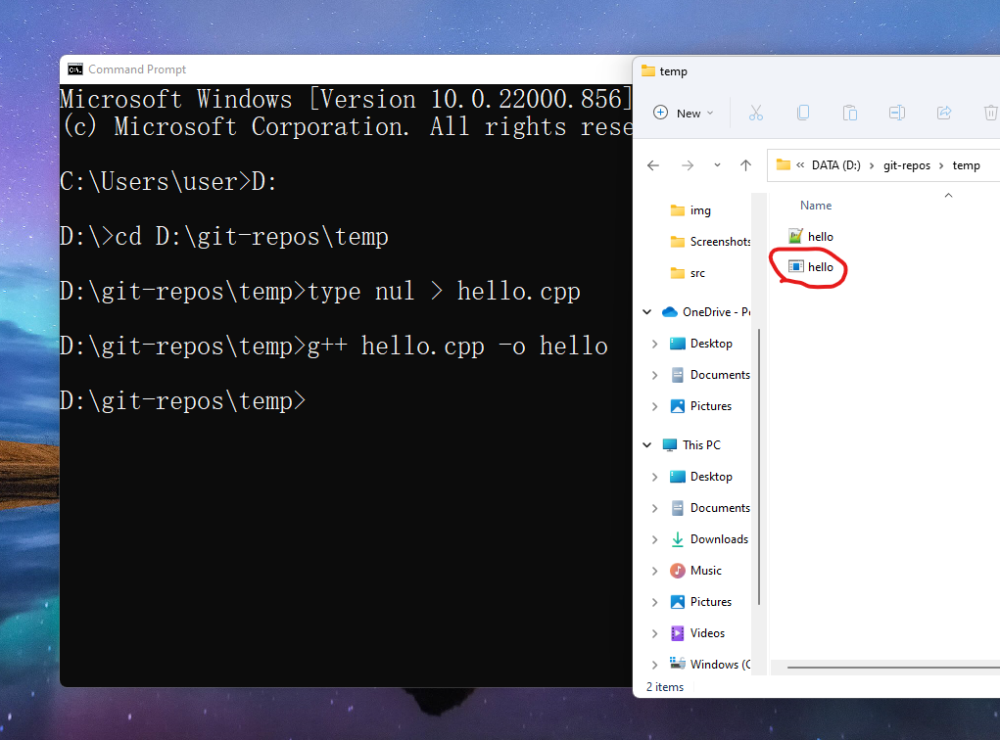
輸入檔名即開啟檔案，下面為成功畫面。
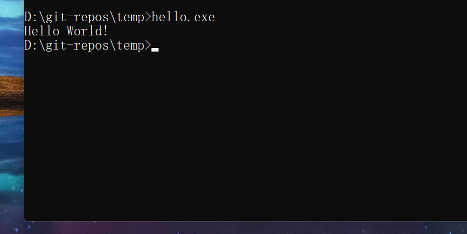